Concept Art · Round 2 · Storybook & HD-2D
You liked the Storybook HD-2D direction from Round 1 — but it was dark and heavy. Here are four evolutions of that family: the recommended cozy hybrid, a brighter storybook, a different HD-2D flavour, and a sunlit daytime HD-2D. Every sprite is real PixelLab test art, same four subjects across all four, so the comparison is honest.
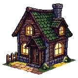
Lantern-lit, twilight, painterly — premium but dark, and the heaviest to produce. The four directions below keep its craft and warmth while fixing the darkness and, in two cases, pulling production cost back down.
Same subject, four directions. The dashed card on the left is the original for reference. Pick a feel, then open its tab.
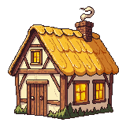
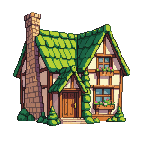
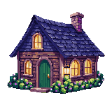
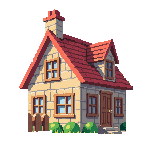
Stardew-readable chunky shapes, lit by storybook warmth. Daytime, golden, friendly — the "wow" of lit windows without the dark.
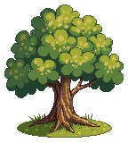
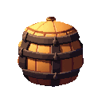
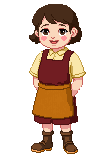
#f4e4c1#e7b65a#c9764a#8a5a3b#7cb04a#4e7a33#ffd98aThis is the Round 1 recommendation made concrete: take the chunky, instantly-readable forms of cozy cottagecore and light them with the storybook's baked warmth — glowing windows, soft cast shadows, a touch of moss-and-grain texture — but at golden-hour daytime instead of midnight. You keep the premium "hand-crafted" feel where it matters (hero buildings, the village) without the legibility tax of full twilight HD-2D.
Crucially it's the cheapest to adopt: it's mostly tightening and re-lighting what puzzleDrag2 already has. One disciplined warm palette unifies the whole town, and the existing 128 px seasonal pipeline already lives in this world.
Same painterly storybook fidelity — now under a blue-sky noon. Mossy roofs, flower boxes, whimsical picture-book colour.
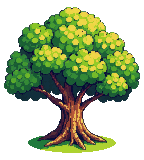
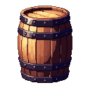
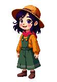
#efe2c4#6fae4f#4f8f3e#c98a4a#9c6b43#8fd0f0#e2557bThe most literal answer to "make the Storybook less dark." It keeps the full painterly detail — layered foliage, mossy green roofs, flower boxes, hand-illustrated grain — but swaps twilight for a bright blue-sky noon with cheerful, saturated-but-warm colour. It reads like the cover of a children's picture book: premium and inviting at once.
The trade-off is honesty: it's still detailed, high-fidelity art. The village will look gorgeous; the board tiles will need a deliberately calmer, lower-detail treatment so the puzzle stays legible at speed.
Sea-of-Stars lineage: vibrant jewel tones, glowing flora, soft bloom. Cinematic and enchanted rather than cozy-rustic.
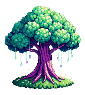
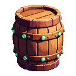
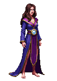
#0f2b2b#1f6f5c#38d6a8#b07ad6#6a4a8a#ffcf6a#e8fff4A genuinely different take on HD-2D. Instead of the warm-rustic Octopath mood, this is the vibrant, enchanted end of the genre — rich emerald-teal and amethyst jewel tones, luminescent flowers and glowing lanterns, soft bloom and drifting light. It signals "magical world" and gives the game a distinct, memorable identity that the cozy-farming crowd rarely owns.
It's the boldest swing: it moves furthest from the current warm palette and leans hardest on emissive glow and bloom — gorgeous in the slow village, but it demands the most discipline to keep the puzzle board legible.
High-key midday HD-2D: crisp, sunlit, naturalistic, with a subtle bloom on highlights. The "diorama in the sun" tier.
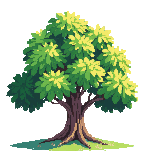
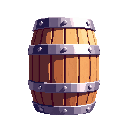
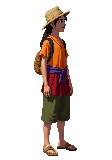
#bfe3f5#7fb5d8#d8c79a#9c7a4f#6fae4f#3f7a3a#fff3d0The prestige HD-2D look you liked — but at high noon. It keeps the technical hallmarks (detailed sprites, miniature-diorama framing, a kiss of bloom on sunlit edges) while swapping the moody twilight for crisp, high-key naturalistic daylight: clear blue sky, vivid-but-true colour, clean short shadows. It's the most "photographable" of the four and still unmistakably premium.
Compared to Lush Fantasy it's grounded and naturalistic rather than magical; compared to Cheery Storybook it's more cinematic and less illustrated — the light is real, not painted-on. The cost sits between the two: detailed art, but a daylight key is far kinder to readability than twilight.
Your one hard constraint. Whichever direction wins, hold these. They're what separates "premium on a monitor" from "muddy on a phone in the sun."
You said you're not committed to a style. Most of these sit just outside the Storybook/HD-2D family but score well on mobile and would make the game look unlike its cozy competitors. The first is a direct proof point — a cozy pixel village game already shipping on iOS. Say the word and I'll generate a test sprite set for any of them.